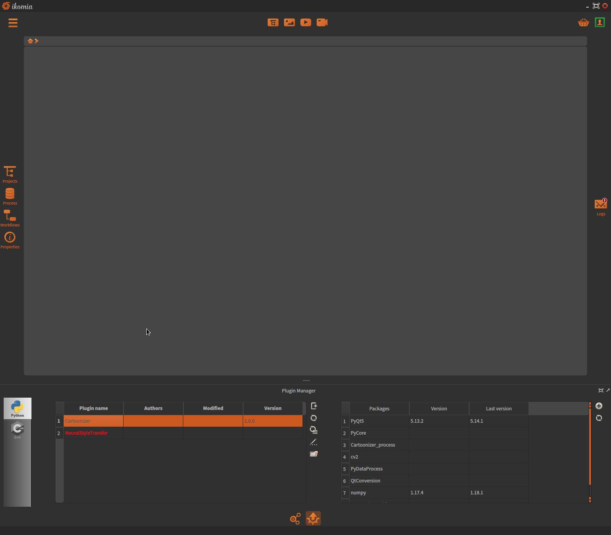
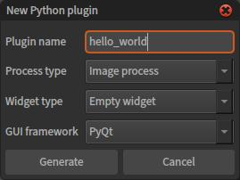

Hello world plugin¶
In this first tutorial, we will create an empty plugin and introduce the core mechanisms. Basically, first steps of plugin creation can be done either manually or with our dedicated module.
With Ikomia Plugin Manager (recommended)¶
The simplest way to create plugins is to use the integrated Plugin Manager:
The left table shows the list of all your plugins, you will find a list of action buttons to its right. Click on the first button to start creating a plugin:
Set parameters:
Plugin name: must be unique as it is the identifier of the plugin. The given name will appear in the Ikomia process library.
Process type: rely on the source data type. This choice determines the base class on which the process class will be derived from:
Generic process: no input/output and no data structure pre-defined. See
CWorkflowTask.Image process: image processing plugin.
inputs: image + graphics layer
ouputs: image
See
C2dImageTask.Interactive image process: image processing plugin with user interation capability. Same inputs/outputs as image process option. See
C2dImageInteractiveTask.Video process: video processing plugin.
inputs: video + graphics layer
ouputs: video
See
CVideoTask.Optical flow process: video processing plugin dedicated to Optical Flow. Same inputs/outputs as video process option. See
CVideoOFTask.
Widget type: empty widget only (for instance). User must create his own widget according to algorithm parameters. Basic knowledge of Qt framework is recommended. See
CWorkflowTaskWidget.GUI framework: Qt based Python framework. PyQt5 recommended.
Click on Generate button.
Your plugin is now created and ready to use. It is automatically loaded and you can access it from the process library of Ikomia. At this point, the plugin can be added to any workflow but does nothing.
The minimal structure of a plugin is composed by these files:
__init__.py: Python regular package
hello_world.py: implementation of plugin interface. See
CPluginProcessInterface.hello_world_process.py: implementation of the algorithm, its parameters, its metadata and the factory to create process instance.
hello_world_widget.py: implementation of the widget and the factory to create an instance.
Note
the code generated by the Plugin Manager is self documented and will guide you through all the required step.
With you prefered Python IDE¶
Because an Ikomia plugin is a regular Python package, you can create it from scratch with the IDE of your choice.
Here are the steps you should follow:
- Create a new folder into our dedicated folder with the name of your plugin
Windows
mkdir c:\Users\{username}\Ikomia\Plugins\Python\hello_world
Linux and Mac OS X
mkdir ~/Ikomia/Plugins/Python/hello_world
Create your project (optional)
Choose the Ikomia Python interpreter (optional). Ikomia Python interpreter is located in:
Windows
c:\Users\{username}\Ikomia\Python\
Linux and Mac OS X
~/Ikomia/Python/
- Create the 4 required Python files from your IDE
__init__.py
hello_world.py
hello_world_process.py
hello_world_widget.py
Note
The naming scheme of these files is very important: see the section naming convention for details.
Implement the plugin interface that will allow your plugin to be loaded in Ikomia. See example hello_world.py.
Implement your process. See example hello_world_process.py.
Implement your widget. See example hello_world_widget.py.
That’s it. Launch Ikomia, your plugin will be loaded automatically.